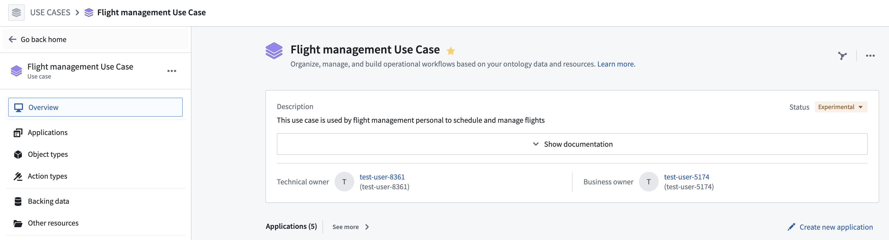
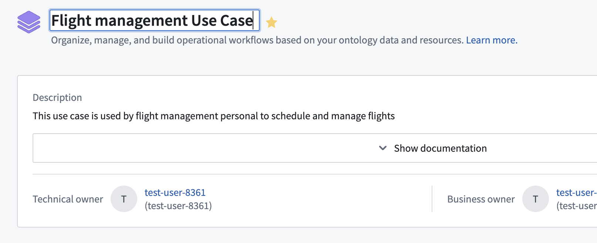
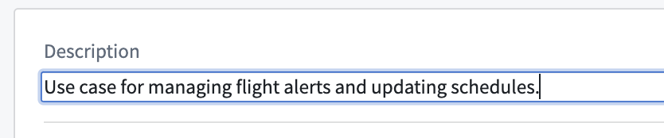
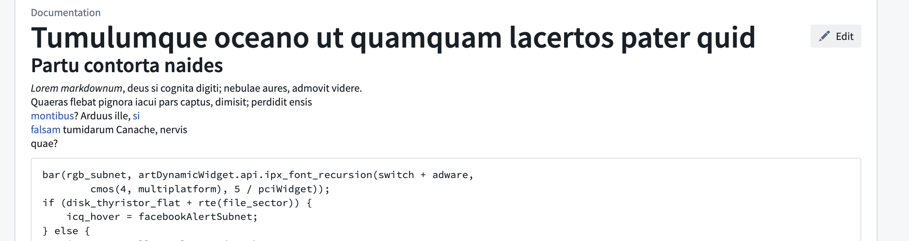
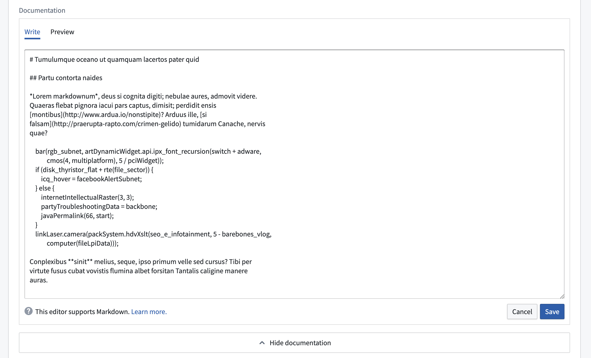
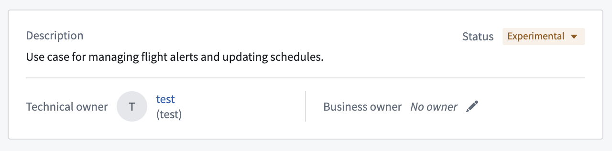
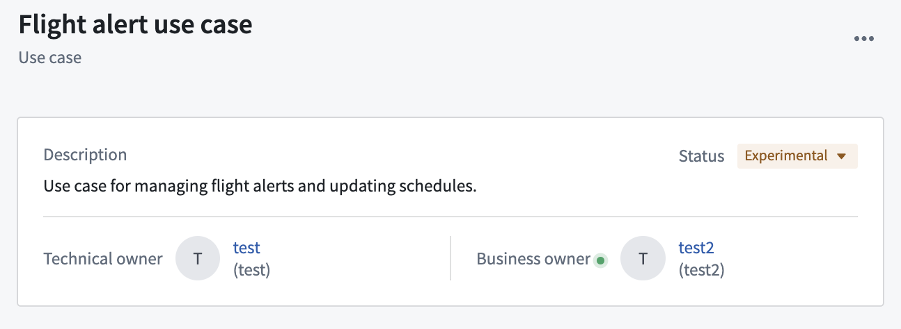
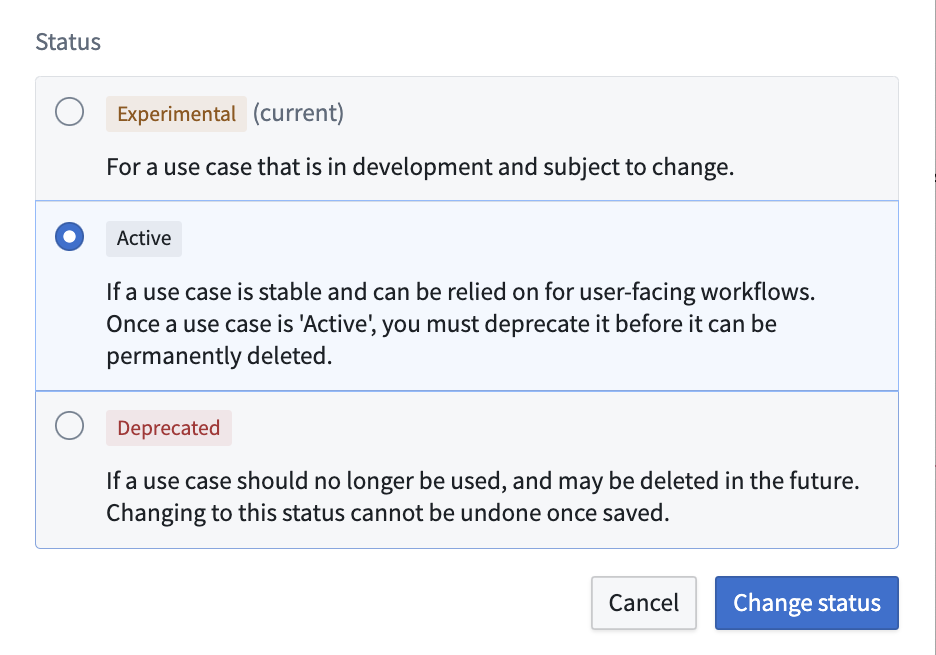

After creating your use case with an existing or new backing Project, you can modify the metadata that helps define your use case. This metadata can be found in your use case overview page and includes the use case name, description, owners, and status.

Change the name of your use case by clicking on the use case name at the top of the page and editing within the text field.

Change the description of your use case by clicking on the description at the top of the page and editing within the text field. As a builder, you can use this field to document the use case, describing its purpose and any relevant information that will help with maintenance over time.
:::callout{theme="neutral"} You can also add a description to each application in the use case by clicking into the application page and editing the description field. :::

You can view and edit use case documentation using Markdown language. Expand the documentation section by selecting Show documentation > Edit.

In the Markdown editor, use the Write tab to input or update the use case documentation, and the Preview tab to view your changes before saving them.

:::callout{theme="neutral"} To edit use case documentation, you must have case editor or owner role and edit rights on the project cover page as use case documentation is stored on the backing project cover page. :::
There are two types of owners that you can assign to your use case: Technical and Business. Both can be assigned to an individual user or a group.
The user who created the use case is the default technical owner of the use case.
Business owner: The business owner is typically a user who tracks workflow progress and financial details of a use case.

To change the owners of your use case, hover over the name or empty field and select the pencil icon. This will open a search dropdown where you can scroll through or search for available users or groups.

You can assign your use case a status related to its operation status:
To change the status of our use case from Experimental to Active, select the status dropdown, choose Active, then click Change status.

:::callout{theme="neutral"}
If you change a use case status to Active while the use case has object types or action types in Experimental or Deprecated status, a warning sign will appear near the status dropdown and in the top left sidebar indicating a disparity between resource and use case statuses. We generally do not recommend creating this discrepancy.
:::